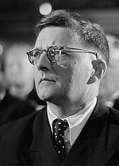
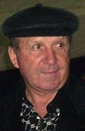
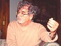
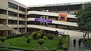
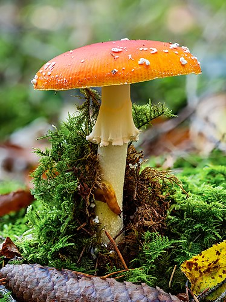

Artículo destacado
Dmitri Shostakóvich
Dmitri Shostakóvich en 1950
Dmitri Dmítrievich Shostakóvich (en ruso: Дмитрий Дмитриевич Шостакович, romanización: Dmitrij Dmitrievič Šostakovič, Acerca de este sonido pronunciación (?·i); San Petersburgo, 25 de septiembre de 1906-Moscú, 9 de agosto de 1975), conocido como Dmitri Shostakóvich, fue un compositor y pianista soviético, uno de los músicos más importantes del siglo xx.
Shostakóvich se hizo famoso en los años iniciales de la Unión Soviética, con obras como su Primera Sinfonía o la ópera La nariz, que combinaban con gran originalidad la tradición rusa y las corrientes modernas procedentes de occidente. Posteriormente, su música fue unas veces denunciada como decadente y reaccionaria y otras

alabada como representativa del nuevo arte socialista por el Partido Comunista de la Unión Soviética (PCUS). En público, siempre se mostró leal con el sistema soviético, ocupó responsabilidades importantes en las instituciones artísticas, aceptó pertenecer al PCUS en 1960 y llegó a ser miembro del Sóviet Supremo de la Unión Soviética. Su actitud frente al gobierno y el Estado soviético ha sido objeto de agrias polémicas y se ha discutido enconadamente si fue o no un disidente clandestino frente a la URSS.
Tras un período inicial en el que parecen primar las influencias de Serguéi Prokófiev, Ígor Stravinski y Paul Hindemith, Shostakóvich desarrolló un estilo híbrido del que es representativa su ópera Lady Macbeth de Mtsensk (1934). Posteriormente, derivó hacia un estilo posromántico, donde destaca la Quinta Sinfonía (1937), y en el que la influencia de Gustav Mahler se combina con la tradición musical rusa, con Modest Músorgski y Stravinski como referentes importantes. Integró todas esas influencias creando un estilo muy personal. Su música suele incluir contrastes agudos y elementos grotescos, con un componente rítmico muy destacado. En su obra orquestal destacan quince sinfonías y seis conciertos, en su música de cámara cabe mencionar especialmente sus quince cuartetos de cuerdas, también compuso varias óperas, así como música de cine y ballet.
Leer
Todos los artículos destacados
Actualidad
Pandemia de COVID-19
Conflicto entre Kirguistán y Tayikistán
Protestas en Colombia
8 de mayo: Súper Rugby Australia y Aotearoa: Finales
7-9 de mayo: Gran Premio de España de Fórmula 1
Fallecimientos
El futbolista y entrenador argentino Carlos Timoteo Griguol
6 de mayo: Carlos Timoteo Griguol, futbolista y entrenador argentino (84; en la imagen superior)
El biólogo y epistemólogo chileno Humberto Maturana
6 de mayo: Humberto Maturana, biólogo y epistemólogo chileno (92; en la imagen inferior)
5 de mayo: Abelardo González, futbolista español (76)
5 de mayo: Urbano Marín, juez chileno (85)
5 de mayo: Guillermo Murray, actor argentino (93)
5 de mayo: T. K. S. Natarajan, actor y cantante indio (87)


5 de mayo: Philipose Mar Chrysostom Mar Thoma, obispo indio (103)
5 de mayo: Bertil Johansson, futbolista sueco (86)
5 de mayo: Gueorgui Prokopenko, nadador ucraniano (84)
5 de mayo: George Jung, narcotraficante estadounidense (78)
4 de mayo: Raúl Scarrone, obispo uruguayo (90)
4 de mayo: Simon Achidi Achu, político camerunés (86)
4 de mayo: Omar Hugo Gómez, futbolista argentino (65)
Conmemoraciones y fiestas
8-9 de mayo: Jornadas de Recuerdo y Reconciliación en Honor de Quienes Perdieron la Vida en la Segunda Guerra Mundial
8 de mayo: Día de la Victoria en Europa
8 de mayo: Día Mundial del Cáncer de Ovario
8 de mayo: Día Mundial del Comercio Justo
8 de mayo: Día Mundial de la Cruz Roja
6 de mayo: Día Internacional Sin Dietas
Véase también: Categoría:Actualidad, 2021, Categoría:2021
Otros eventos actuales
Artículo bueno
Facultad de Ciencias Sociales
Facultad de Ciencias Sociales
La Facultad de Ciencias Sociales de la Universidad Nacional Mayor de San Marcos (siglas: FCS-UNMSM) es una de las veinte facultades que conforman dicha universidad. La facultad cuenta con las escuelas profesionales de Historia, Sociología, Antropología, Arqueología, Trabajo social y Geografía, que brindan tanto estudios de pregrado como de posgrado. Sus antecedentes son las primeras cátedras de estudios de ciencias sociales en la Universidad de San Marcos, acontecidas a fines del siglo xix, las cuales fueron el origen directo de los estudios universitarios de este campo en el Perú.

Leer
Todos los artículos buenos
Efemérides
7 de mayo
Sony logo.svg
1946 (hace 75 años): En Japón, se funda la empresa Sony (en la imagen).
1971 (hace 50 años): Nace Marco Casagrande, arquitecto finlandés.
1971 (hace 50 años): Nace Thomas Piketty, economista francés.
1996 (hace 25 años): Nace Faker, jugador de deportes electrónicos surcoreano.
2011 (hace 10 años): Fallece Severiano Ballesteros, golfista español (n. 1957).
6 de mayo
7 de mayo
8 de mayo
Recurso del día

Hongo oronja
Hongo oronja
El oronja (Amanita caesarea), conocido también como huevo de rey y yema de huevo, es un hongo basidiomiceto del orden Agaricales. Su cuerpo fructífero se desarrolla entre el verano y otoño, aunque crece mayormente en lugares con tormentas abundantes. Suele localizarse en regiones de clima mediterráneo en Europa. Muestra preferencia por los terrenos silíceos y bosques aclarados, encontrándose principalmente bajo alcornoques, encinas, robles, castaños y, ocasionalmente, coníferas. Es un hongo comestible, que, el propio emperador romano Augusto, lo consumía por su agradable sabor y toque dulce.
Archivo
Otros proyectos de la Fundación Wikimedia
Wikimedia Commons
Commons
Imágenes y multimedia
Wikcionario
Wikcionario
Diccionario libre
Wikidata
Wikidata
Base de datos libre
Wikilibros
Wikilibros
Libros de texto y manuales
Wikinoticias
Wikinoticias
Noticias libres
Wikiquote
Wikiquote
Colección de citas
Wikisource
Wikisource
Biblioteca libre
Wikispecies
Wikispecies
Directorio de especies
Wikiversidad
Wikiversidad
Recursos de aprendizaje
Wikiviajes
Wikiviajes
Guía de viajes
Meta-WikiMeta-Wiki – Coordinación de proyectos
Portales
Artes
Artes: Arquitectura – Cine – Danza – Literatura – Música – Música clásica – Pintura – Teatro
Ciencias sociales
Ciencias sociales: Comunicación – Deporte – Derecho – Economía – Filosofía – Lingüística – Psicología – Sociología
Ciencias naturales
Ciencias naturales: Astronomía – Biología – Botánica – Física – Medicina – Matemática – Química
Geografía
Geografía: África – América – Antártida – Asia – Europa – Oceanía – Países
Historia
Historia: Prehistoria – Edad Antigua – Edad Media – Edad Moderna – Edad Contemporánea
Política
Política: Feminismo – LGBT – Marxismo – Nacionalismo – Socialismo – Terrorismo
Religión
Religión: Ateísmo – Budismo – Cristianismo – Iglesia católica – Islam – Judaísmo – Mitología
Tecnologías
Tecnologías: Biotecnología – Exploración espacial – Informática – Ingeniería – Software libre – Videojuegos